สำนักสงฆ์เขาพระครู
สำนักสงฆ์เขาพระครู สถานที่ปฏิบัติธรรมที่ตั้งอยู่บนยอดเขา กลางเมือง ศรีราชา ใน จังหวัดชลบุรี แห่งนี้ ด้านบนนั้นจะมีวิวทิวทัศน์ที่สวยงาม สงบ และร่มรื่น นอกจากที่นี่จะเป็นสถานปฏิบัติธรรมแล้ว ก็ยังเปิดให้นักท่องเที่ยวได้เข้าไปไหว้พระ ทำบุญ กันอีกด้วยค่ะ โดยมี องค์พระพุทธลีลานาคะบารมี เป็นองค์พระประธานขนาดใหญ่ ที่ประดิษฐานอยู่บนลานปฏิบัติธรรม บอกเลยว่าดูสวยงดงามและยิ่งใหญ่มากเลยทีเดียว
 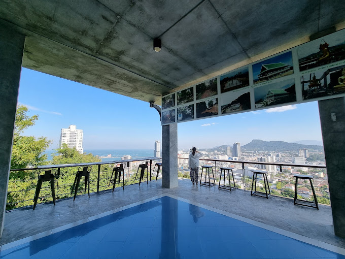
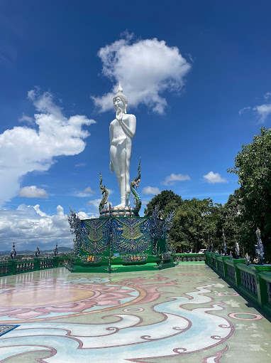
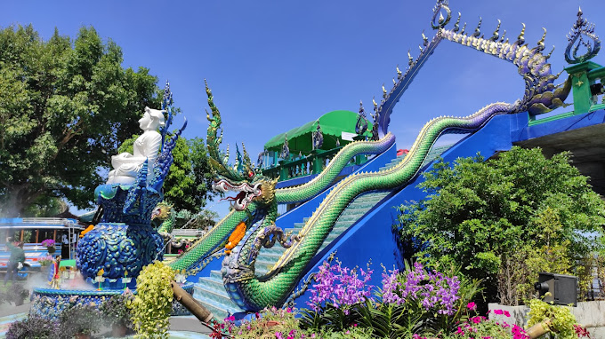
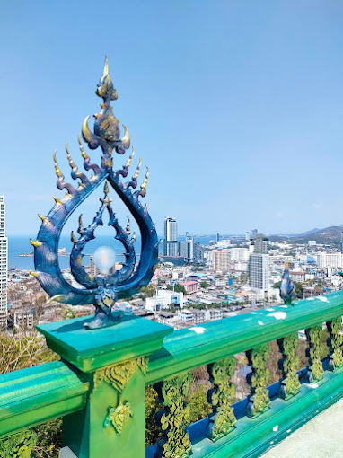
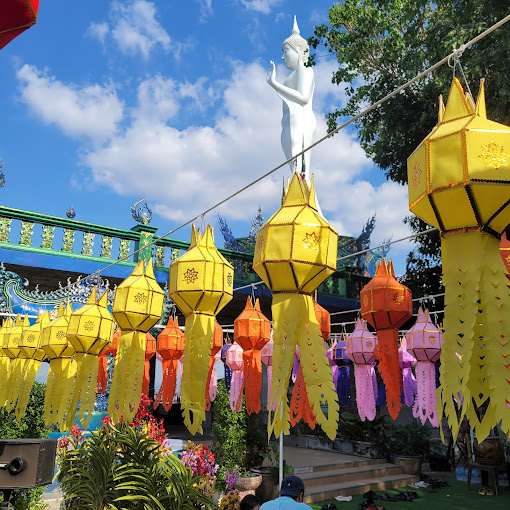
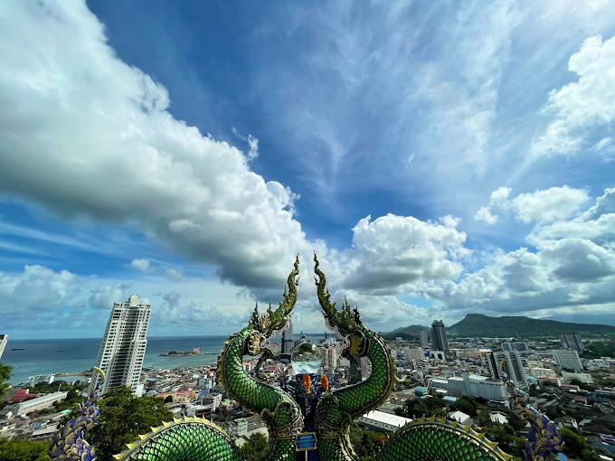
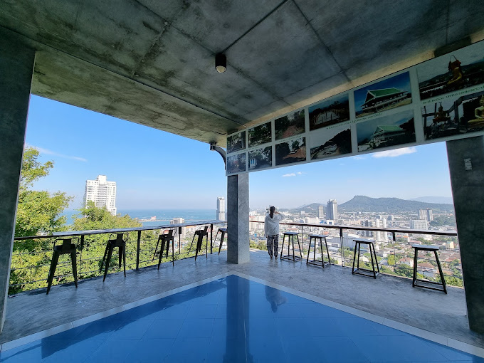
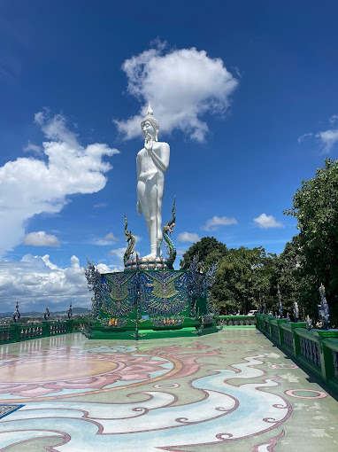
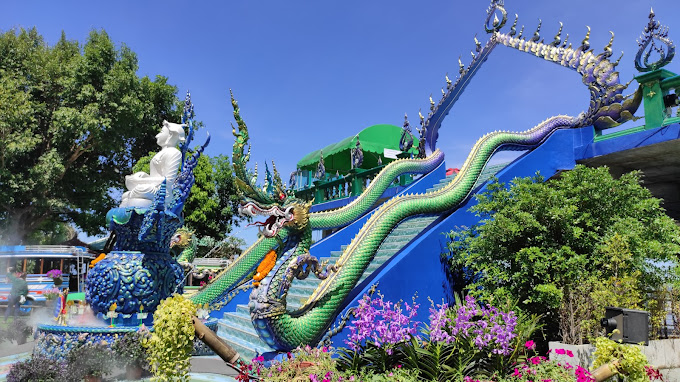
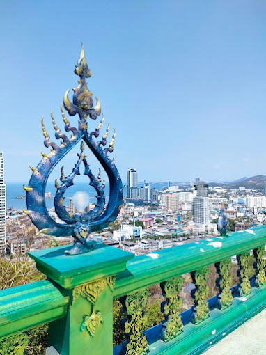
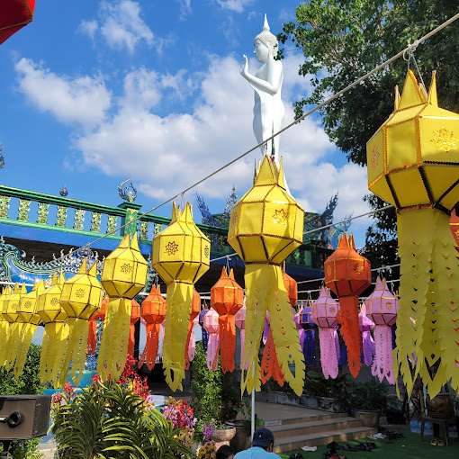
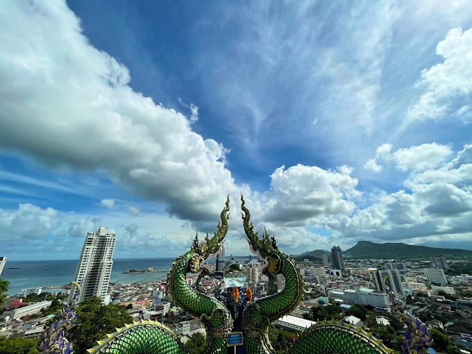